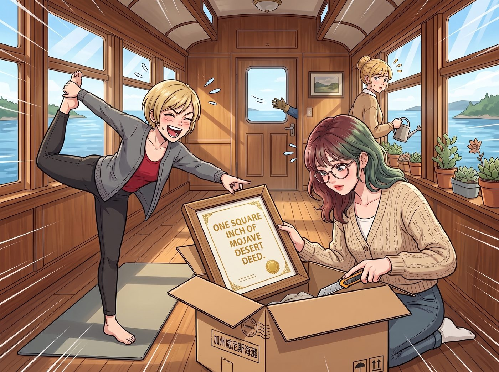

一平方英吋的快樂

幾天後，一個貼著「加州威尼斯海灘」郵戳的快遞包裹，被郵差送到了普吉特海灣的二號車廂。
此時，Victoria 正在做瑜伽，Kate 正在給她心愛的多肉植物澆水。Lily 穿著她標誌性的米色針織衫，用一把裁紙刀，精準地沿著包裹的封箱膠帶切開。
裡面躺著那份燙金的、裝在廉價相框裡的「莫哈韋沙漠一平方英吋地契」。
Victoria 走過來，看著那份地契，先是愣了一下，隨即爆發出幸災樂禍的大笑。
「哈哈哈哈！Chloe 雖然是個文盲，但她這個惡作劇簡直是天才級的稅務炸彈！Lily，妳現在是加州的地主了。就算這塊地只有一張郵票大小，妳也得研究怎麼申報、怎麼繳稅，還要應付當地的水權和荒漠生態法規。那隻垃圾熊想用妳最擅長的行政手續來逼瘋妳！」
Kate 有些擔憂地放下水壺：「這會不會太麻煩了？要不我們把它收起來，假裝沒收到？」
然而，Lily 沒有說話。
她端詳著那份地契，推了推鼻樑上的圓框眼鏡。鏡片反射著車廂裡的燈光，掩蓋了她眼底瞬間燃起的光芒。
「收起來？不，Kate 學姐。」她輕聲說，「我得先確認，它到底是什麼。」
一、第一個晚上
那天晚上，Lily 的工作站一直亮到凌晨三點。
她先查了地契角落那行小字「依聯邦土地管理局（BLM）資料登錄」。然後她打開了聖貝納迪諾郡稅務評估處的公開地籍系統，把地契上的座標一個數字一個數字地輸進去。
查無此地。
沒有地號，沒有登記人，沒有任何一筆以這一平方英吋為單位的產權紀錄。她又比對了聯邦土地管理局的公開地圖：那個座標所在的整片沙漠，是由聯邦政府管理的公有地，根本不可能被切成一平方英吋零賣給遊客。
第二天早上，她端著熱牛奶，平靜地向 Victoria 宣布結論：
「這張地契在法律上什麼都不是，Victoria 學姐。它沒有經過郡政府登記，也不可能經過，因為那塊地本來就屬於聯邦。所以不需要申報，不需要繳稅，也沒有任何水權問題。」
Victoria 挑了挑眉：「所以 Chloe 的稅務炸彈是一顆啞彈？那妳還查什麼？」
「因為還沒查完。」Lily 說。
二、第二個晚上
第二個晚上，Lily 把那個座標放進了加州魚類及野生動物局的物種分布圖層裡。
螢幕上浮現出一片淡綠色的範圍。
「Victoria 學姐，」半夜十二點，Lily 突然轉過頭，眼睛亮得嚇人，「這個座標，剛好落在莫哈韋沙漠陸龜的棲息地範圍裡。牠們是受保護的物種，一隻可以活八十年，一年大部分時間都躲在地底的洞裡睡覺。」
窩在沙發上看雜誌的 Victoria 翻了個白眼：「所以呢？妳打算去沙漠裡給那塊郵票大小的地找一隻烏龜當房客？」
「我只是覺得……」Lily 看著螢幕上那片淡綠色，語氣裡帶著一種罕見的、近乎孩子氣的滿足，「Chloe 學姐隨手買給我的這一平方英吋，底下可能正睡著一隻比我們所有人都老的陸龜。這個數據很有趣。」
她把那張棲息地地圖截了圖，列印出來，跟地契收在同一個文件夾裡。
三、第三個晚上
第三個晚上，Lily 寫了一份十頁的報告。
報告的收件人，是威尼斯海灘那家賣出這張地契的獨立書店。她在報告裡條理分明地列出：這份商品的包裝和證書措辭，容易讓消費者誤以為自己真的取得了具有法律效力的土地所有權；依照加州關於不實廣告的相關規定，建議店家在商品上明確加註「僅供紀念，不具法律效力」。報告最後還附上了郡地籍系統和聯邦土地管理局地圖的查詢截圖，作為佐證。
她沒有要求退款，也沒有要求任何賠償。
「妳為了一張五十塊的破紙，寫了十頁？」Victoria 看著那份排版精美、連註腳都整整齊齊的報告，簡直不敢相信自己的眼睛。
「它不是破紙，學姐。」Lily 認真地把報告寄了出去，「它是 Chloe 學姐送我的禮物。」
兩天後，書店老闆回了一封很短的郵件：謝謝您的來信，我們已經在所有地契商品的背面，補貼了一張「僅供紀念」的小貼紙。另外，您是第一個真的去查地籍的客人。
Lily 把那封郵件也印了出來，收進文件夾。
四、共犯
那三天裡，Victoria 和 Kate 目睹了一件比任何行政屠殺都更讓她們震驚的事：
Lily 在查資料的時候，會哼歌。
她會在凌晨兩點對著一張沙漠陸龜的分布圖露出微笑；會在寄出那份十頁報告之後，心滿意足地多喝了半杯牛奶；會在每天早上，把那張廉價的地契從文件夾裡拿出來，擦一擦相框上的灰，然後重新放好。
「她是不是……」Victoria 在廚房裡壓低聲音問 Kate，「真的很開心？」
「嗯。」Kate 溫柔地笑了，「我覺得這可能是她收過最喜歡的禮物。」
五、三個晚上
一週後，猛禽皮卡帶著一身沙塵和一後座的垃圾食物包裝紙，轟隆隆地開回了營地。
Chloe 一進車廂，連行李都沒放下，就直奔 Lily 的工作站，臉上掛著一個期待已久的、極度惡劣的笑容：
「嘿，實習生！怎麼樣？收到我們的禮物了嗎？被那塊地折磨得很慘吧？」
Max 也跟在後面，一臉看好戲的表情。
Lily 抬起頭，推了推圓框眼鏡。她的眼睛下面，確實掛著淡淡的黑眼圈。
「是的，Chloe 學姐。」她用一種疲憊而平靜的聲音說，「為了研究那塊地，我整整熬了三個晚上。」
「哈哈哈哈！」Chloe 爆發出勝利的狂笑，用力拍著 Max 的肩膀，「聽到了沒有！三個晚上！我們終於用官僚主義打敗了官僚主義的化身！」
站在廚房門口的 Victoria 和 Kate 對視了一眼，誰都沒有說話。
Lily 說的每一個字都是真的。她只是沒有說，那是她這幾個月來，過得最開心的三個晚上。
Max 注意到，那張廉價的地契，被掛在了 Lily 辦公桌正上方最顯眼的位置，相框擦得一塵不染。她覺得這大概是 Lily 為了表達「我記住這筆仇了」的某種示威，於是舉起寶麗來，對著它按下了快門。
「喀嚓。」
她在照片背面寫下：
『規則第七十六條：這世上唯一能讓行政黑魔法師吃癟的方法，就是用官僚主義去整她。我們成功了。』
那天晚上，Victoria 經過 Max 的軟木板，看著那張照片和那行字，嘴角抽動了一下，最後還是什麼都沒說，只是默默走開了。
有些祕密，就讓它留在一平方英吋裡吧。